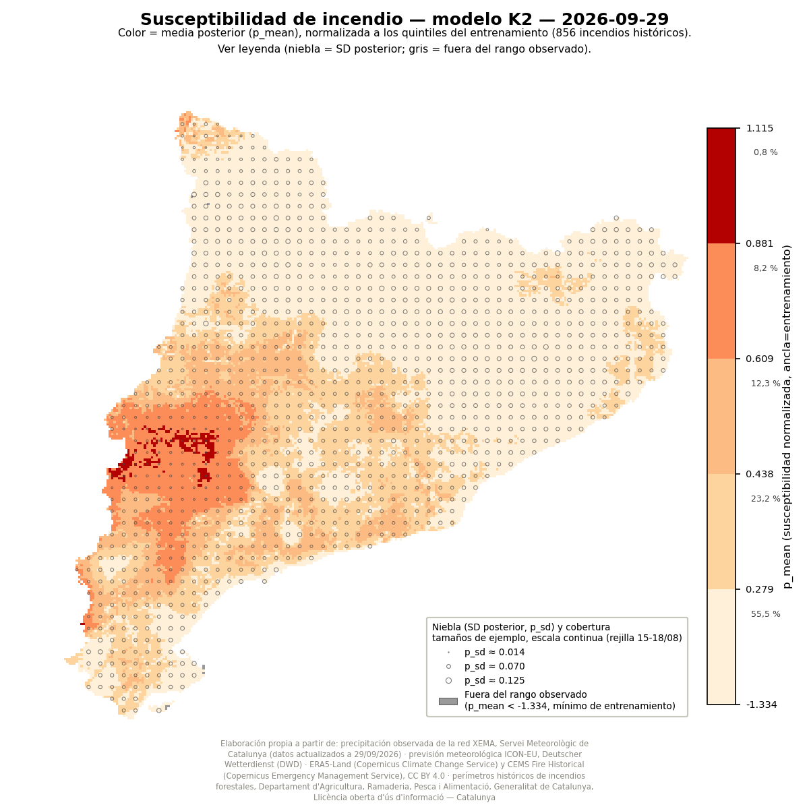

Susceptibilidad de incendio por municipio — 2026-09-29
Modelo K2 · p90 de p_mean por término municipal (856 incendios de entrenamiento)
Vista municipal
Rejilla 1km
Histórico

Clic en la imagen para ampliar / reducir
Ver todos los mapas publicados →
×